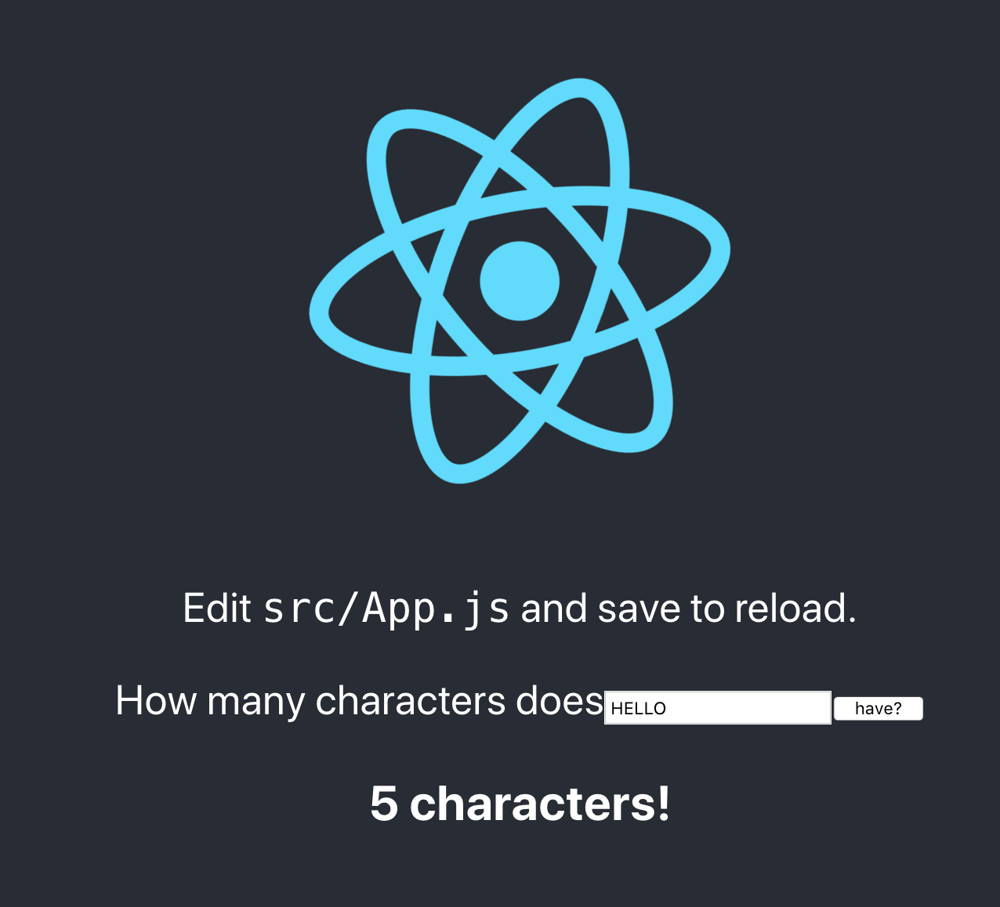

Quickstart¶
Local setup with Docker¶
Let’s assume that you want to create a project called “hello_world”, one that makes a separation between a React-based front end and a Django-based backend, all set up locally using Docker and production ready in Heroku.
Most tutorials will give you a partial solution, so the only way is painstakingly piecing together a solution from multiple guides/tutorials that did some aspect of what you want without covering the whole.
Side projects don’t exactly require optimal productivity, but, unlike jobs, if they become a pain to work on, it’s pretty easy to just quit.
Instead, we can do as follows. First, get Cookiecutter. Trust me, it’s awesome:
$ pip install "cookiecutter>=1.7.0"
Now run it against this repo:
$ cookiecutter https://github.com/ohduran/cookiecutter-react-django
You’ll be prompted for some values. Provide them, then the project will be created for you.
Now, on your terminal, simply do docker-compose up –build, and wait for the containers to build. Eventually, you’ll be able to see the index page by going to http://127.0.0.1/
You will be able to see the following:

Write something on that box over there, it will get you the number of characters via your Django API!
{kind=link}